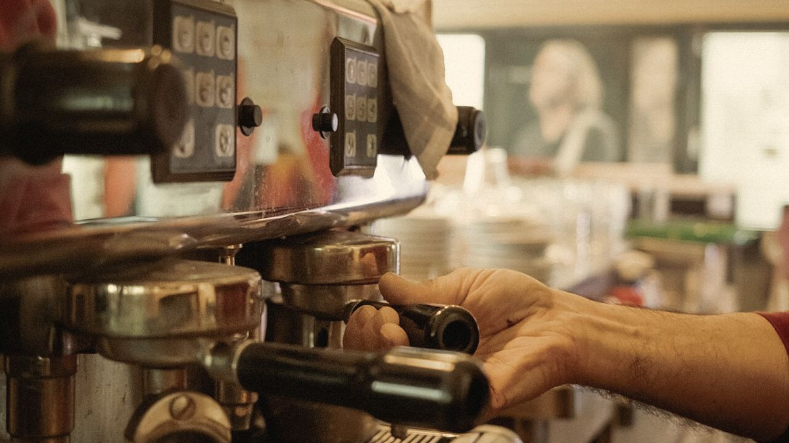
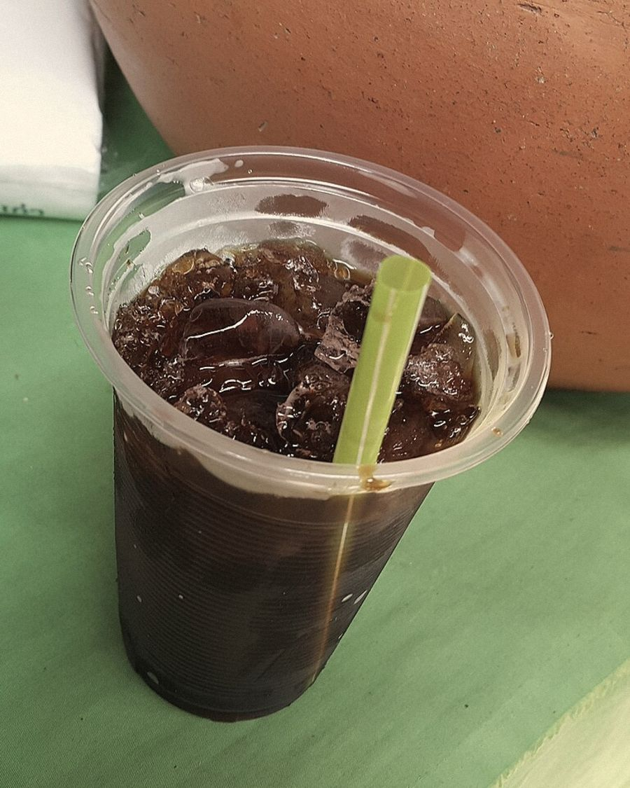
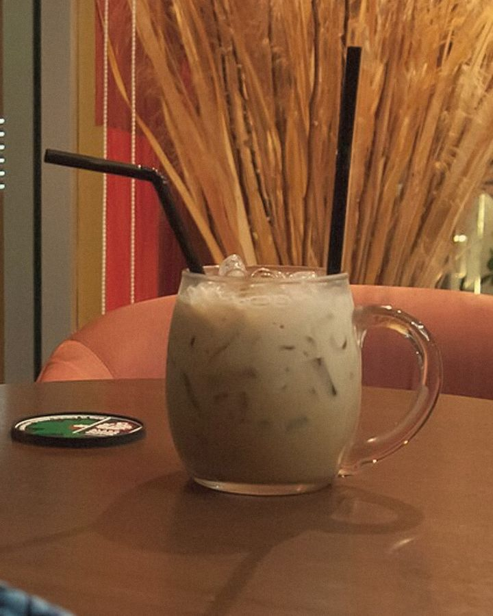
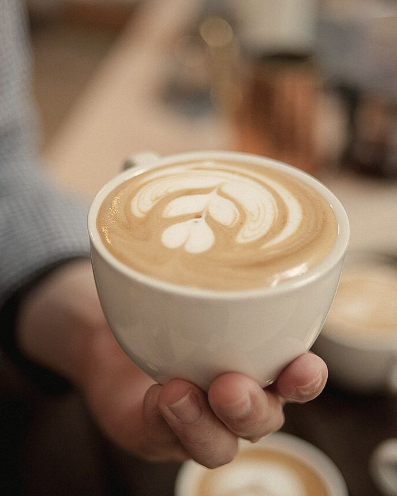

เริ่มจากรถเข็นหน้าซอย
ปี 2557 พี่ต้อมขายโอเลี้ยงจากรถเข็นหน้าซอยเกษมสันต์ ลูกค้าเป็นคนทำงานแถวสยามที่แวะทุกเช้า
วันนี้มีหน้าร้านแล้ว แต่ยังชงด้วยถุงผ้าแบบเดิม หลายคนสั่งแก้วเดิมทุกวัน ชื่อร้านก็มาจากตรงนั้น

ชงโอเลี้ยงด้วยถุงผ้าแบบที่ร้านกาแฟโบราณทำมา คู่กับเอสเพรสโซ่สำหรับคนที่อยากได้ลาเต้ เดินจาก BTS สนามกีฬาฯ 3 นาที




ปี 2557 พี่ต้อมขายโอเลี้ยงจากรถเข็นหน้าซอยเกษมสันต์ ลูกค้าเป็นคนทำงานแถวสยามที่แวะทุกเช้า
วันนี้มีหน้าร้านแล้ว แต่ยังชงด้วยถุงผ้าแบบเดิม หลายคนสั่งแก้วเดิมทุกวัน ชื่อร้านก็มาจากตรงนั้น
ซอยเกษมสันต์ 2 เดิน 3 นาทีจาก BTS สนามกีฬาแห่งชาติ ทางออก 1